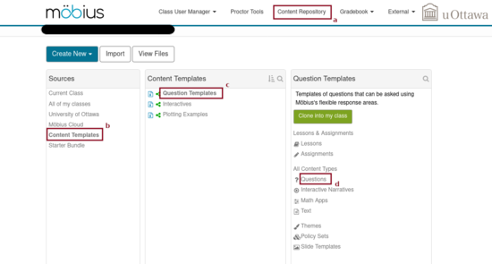
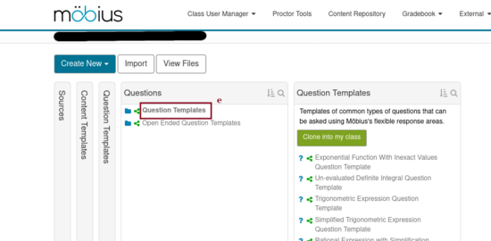
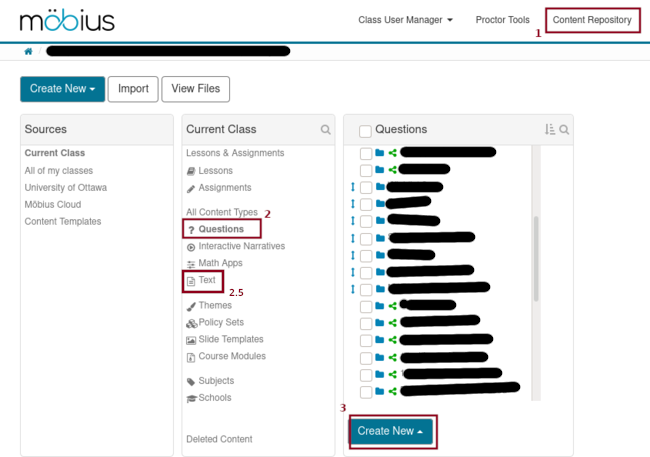
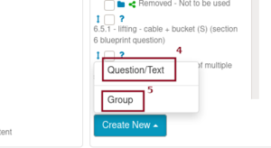
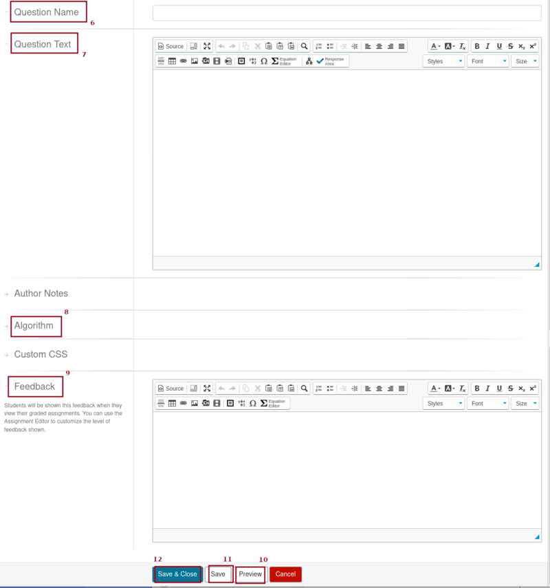
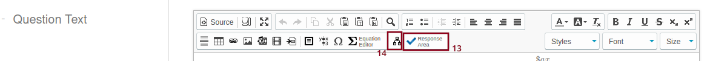
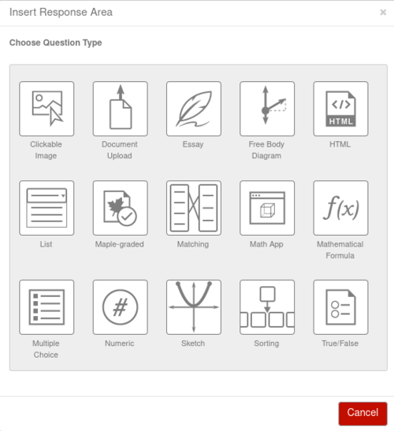
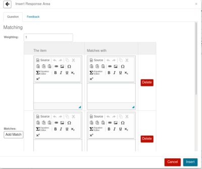

We summarize below the main steps to create a question. The steps that require more advanced explanations will have their own site.
You will find a bunch of sample questions under the Content Repository (item a in the figure below).

Successively clicking on Content Templates (item b in the figure above), Question Templates (item c in the figure above), Questions (item d in the figure above) and Question Templates (item e in the figure below), you get the following display.

You can clone the entire list of questions, or click on a question and clone only that question. They will appear in the Questions directory of the Content Repository of your course. You can then use them as they are or modify them to suit your needs.
There are also some examples of questions under the directory Open Ended Question templates.
To create a question, you need first to select Content repository (item 1 in the figure below) in the top menu. You will get the window below. Select Questions (item 2 in the figure below) under Current Class to open the section Questions that can be seen in the figure below.

If you click on Create New (item 3 in the figure above), then you get two options: Question/Text and Group (items 4 and 5 in the figure below). You select Group to create a new subdirectory of Questions. You select Question/Test to create a question.

After selecting Question/Text, you get a large window with all the sections to create a question.

We will focus on the four important sections to create a question: Question Name , Question Text, Algorithm and Feedback (items 6, 7, 8 and 9 respectively in the figure above). We elaborate on each of them in the sections below.
You can preview your work at any time using the button Preview (item 10 in the figure above) at the bottom of the display.
It is always a good practice to save (item 11
in the figure above) you work on a regular basis. Möbius will
terminate your session after a long period of inactivity.
Long
is never long enough when your session is
terminated before you had time to save your work.
When you have finished writing your new question, do not forget to Save and Quit (item 12 in the figure above).
The content expected in Question Name is obvious. If you plan to create a question that will be moved to the root directory and shared with everyone else, then you may want to start the title by Chapter_number.Section_number.Question_number - (as we do at the University of Ottawa) or some similar structure that makes it easy to identify the questions.
It is clear that the text of your question will go into the section Question Text. What is less obvious is the format that the question can have.
You can use in the statement of your question any of the variables that you will have defined in the Algorithm Section. Do not forget that the variables start with the dollar sign $. This is a character that you have to use with care in your question because of its association with the name of variables in Möbius.
You may use \(\LaTeX\) commands with the following convention: expressions between dollar signs $ must be written between \( and \), expressions between double dollar signs $$ must be written between \[ and \]. This last option already exist in \(\LaTeX\). You can use variables defined in the Algorithm Section into your \(\LaTeX\) expressions.
Consider the menu of the section Question Text displayed below.

There are many items in that menu to format your question. We will let you explore and play with them. There is one item that we must talk about because it is THE item to create the question. I am talking about Response Area (item 13 in the figure above). If you click on Response Area to insert a response area at the position of your cursor in the text, then you get the following list of all the types of questions to choose from.

Select the type of questions that you want to insert in the body of your question. You can insert several response areas in the body of your question. The do not have to be associated to questions of the same type.
This is probably going to be the type of questions that you will use the most often. There are several options for this type of questions. They are self-explanatory.
Must of the types of questions are self explanatory except for one. We
devote a full site for the type
. You should consult that site if you want to use this
type of questions. It is the must powerful
type of
questions but also the most complex one. You have to know some Maple
coding.
There is another type of questions that we will look at because there is a annoying bug in it (still not fixed at the time that this text is written). It will also illustrate how to use several of the other types of questions. If you select the type of questions Matching, then you get the following form to fill in.

You type in the weight of this response area in the box identified as Weighting. This will be the weight of this response relative to the other response areas in your question. You can enter almost anything in the columns The item and Matches with. You can use \(\LaTeX\). You can insert graphs produced in your Algorithm Section with maple; just include the variable that contains the figure. And so on.
You may include feedback for this response area. However, the author prefers to use the Feedback Section for the detailed solution.
As mentioned above, there is an annoying bug. This type of questions works perfectly well and you should not hesitate to use it. The problem is if you use braces, { and }, in \(\LaTeX\). Each time that you access the response area to make a correction, all the braces are erased. There is a problem with the parser for this question.
To conclude this section, we should also mention the type of questions Math App. We also devote a section to creating and using . There is a lot to say about this type of questions. Some knowledge of Maple programming are also needed to create Math Apps.
There is another item in the menu of the Question Text section that is worth mentioning. It is possible to create adaptive questions by clicking on the item identified by the number 14 in the figure of the Question Text above. To learn more about adaptive questions, you should consult the excellent documentation provided by DigitalEd on the site .
There is a lot to say about the Algorithm Section. This is the section where all the mathematics needed to create your question must go. Consult the page for more information. It is also possible to use Maple in the Algorithm Section. You will find many examples of what can be done with Maple in the page .
Finally, the Feedback Section is the section where you write your detailed solution. As for the section for writing your question, you may use variables defined in the Algorithm Section and \(\LaTeX\).